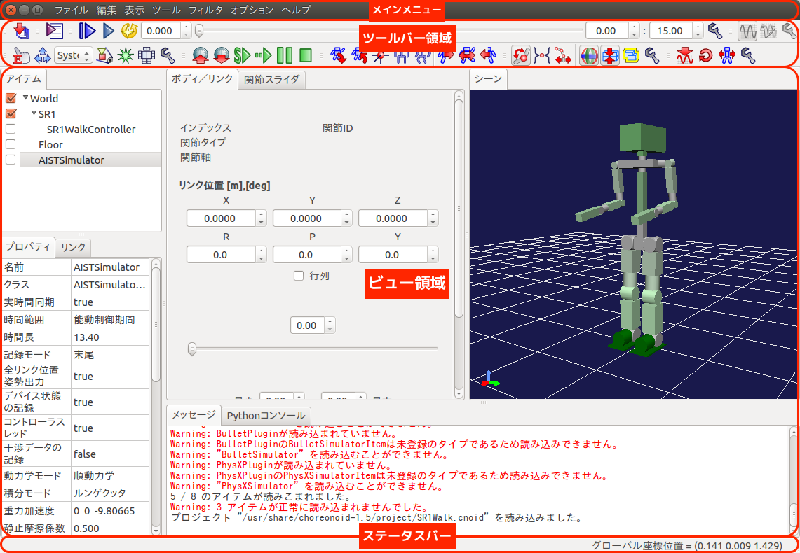
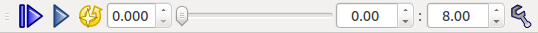

Basic usage of Choreonoid¶
In this chapter, we will learn basic usage of Choreonoid using sample project.
Running¶
Specify path of sample project “SR1Walk.cnoid” to load after the startup.
$ choreonoid ~/catkin_ws/devel/share/choreonoid-1.5/project/SR1Walk.cnoid
Following display should be appeared.
Note
Specify following option to load OpenHRP format model after the startup.
$ choreonoid --hrpmodel ~/catkin_ws/devel/share/choreonoid-1.5/model/SR1/SR1.wrl
Main display¶
Components of “main window” shown after the Choreonoid startup is shown as follows.
Tool bar area¶
Displays various tool bars. Tool bars can be turned on/off by [main menu]-[view]-[show toolbar].
View area¶
Displays various views. In above image, “item” “property” “link” “body/link” “joint slider” “scene” “message” “Python console” view is shown. You can also stack the view and switch by tab.
The view can be turned on/off by [main menu]-[view]-[show view]. By selecting [create view] you can also create multiple views of same kind as well. For example, you can create multiple “scene” views to display multiple view angles of simulation world or display robot camera.
In above image, messages in red color is displayed. When there is problem in Choreonoid, warning and error messages are displayed in the message view. Please check these messages in case of trouble (in above case, the message complains there is no ODE or Bullet plugins, which cause no problem).
Status bar¶
Status bar under the main window displays short message about the current process proceeding in Choreonoid.
Region of the status bar is separated to two parts. Left part displays begging and end of process. Right part displays status of the object currently pointed in the current view.
Note
Due to problem of some graphics driver, GUI elements of Choreonoid sometimes give no response except for 3D display. In such case, please once resize the Choreonoid window and the GUI elements will activated again.
Control of view angle¶
By placing the mouse cursor over the scene view and apply following actions, you can control the 3D graphics of the simulated world.
- Left button click and drag: Rotate around the point you have clicked.
- Center button click and drag: Parallel translation.
- Wheel: Extend or shrink.
- Shift+Left drag: Snap horizontally or vertically.
Also, you can change the view angle to overview the whole simulation world by clicking the following button on the tool bar. This button is useful when you lost your current view angle and want to reset.
Switching of camera¶
The camera used to render view angle can be switched using pull down widget in the scene bar. Click and focus the scene view you want to switch and select the camera you want to display on the pull down widget.
Default cameras¶
Following cameras are prepared as default.
- System - Perspective
- System - Orthographic
Robot cameras¶
When the robot model loaded in Choreonoid has cameras, it will be listed to pull down widget as follows.
- Robot_name - Camera_name
Tracking camera¶
You can automatically track the model by using BodyTrackingCameraItem.
- Create “BodyTrackingCameraItem” as a child item for the target BodyItem and check the item.
- Name of the item will be appeared on the camera selection widget. Select the name.
- If you set “Keep Relative Attitude” property to true, direction of the camera will be also tracked.
Control shading¶
Default scene view of Choreonoid is configured with shading enabled. If you want to disable the shading, click configure button of the scene bar and uncheck the lighting option.
Wire frame display¶
With wire frame display, you can have transparent view of all the objects. To switch to wire frame mode, click “Toggle the wireframe mode” button of the scene bar.
Collision display¶
During the simulation, we sometimes want to check the collision between the objects. To switch to the collision line visible mode, click “Toggle the collision line visibility” button of the scene bar. Then click on the AISTSimulator item on the item view and set the “Record collision data” property to True.
Start/pause/stop the simulation¶
To start the simulation, click on the following buttons on the “simulation” bar.
Each buttons has following functions respectively (from left side);
- Start the simulation from initial position.
- Start the simulation from current position.
- Pause the simulation.
- Stop the simulation.
You can once stop the simulation and play the result using the slider on the “time” bar. You can enter the exact time on the time bar as well.
To restart the paused simulation, click the “pause the simulation” button.
Save/load/play the simulation result¶
In Choreonoid, we can save the simulation result (trajectory data) and later play the simulation result using the data. Here, we will explain how to do using sample project “PA10Pickup.cnoid”.
Save the simulation result¶
Run Choreonoid
$ choreonoid ~/catkin_ws/devel/share/choreonoid-1.5/project/PA10Pickup.cnoid
After simulation is started, BodyMotion items named “AISTSimulator-XXX” is generated under the BodyItem of moving objects such as robot. These BodyMotion items stores motion trajectory data of simulation result. In following example, BodyMotion items are generated for “PA10” and “box3” items.
Before simulation starts After simulation starts Select each BodyMotion items (it is OK to select multiple items as well) and save the data by selecting [file]-[save as] menu.

Files are saved for each BodyMotion items, so please specify the file name containing name of parent item.
Note
To select multiple items in item view, press Ctrl key and click the item.
If you press Shift key and click, multiple items in range can be selected.
Load and play the simulation result¶
Let’s, once close the Choreonoid and restart.
$ choreonoid ~/catkin_ws/devel/share/choreonoid-1.5/project/PA10Pickup.cnoid
Select the target BodyItem in the item view, and load corresponding BodyMotion item from file. Select [file]-[open...]-[body motion] menu.
Before loading (BodyItem is selected) After loading Load the corresponding BodyMotion data for the other BodyItems as well.
To play the loaded motion data, we have to select the BodyMotion items (select all the BodyMotion items if there is multiple objects).

Click “start animation” button on the time bar to play the simulation result.

View mode and edit mode¶
In the scene view, we usually control the 3D graphics of the simulation world using view mode. But by switching to edit mode, we can control the objects in the simulation world.
- Mode can be switched by pressing ESC key or by double click the background of the scene view.
- Shape of mouse cursor is changed to hand shape when in edit mode.
- We recommend to use scene view in view mode in normal operation to avoid accidental editing of object.
- In edit mode, you can pull to move the objects in following situations.
- Set initial pose of the object (before the simulation).
- Give external force to the robot (during the simulation).
Generate movie of simulation result¶
Once apply the simulation and make motion playable using the play button on the time bar.

Select [Tools]-[Movie Recorder] menu. “Movie recorder” dialog will be shown.
Set following parameters.
Select target view to record.
Select recording mode to offline.
Enter directory you want to output the serial capture image file.
Enter base file name to save serial capture image file.
Set “Start time” and “Finish time”.
Set frame rate.
Image size can be specified by checking “image size”. This function will crop the captured image to specified size. Thus, the original size of view has to be larger than the specified size. Please adjust the view size to be larger than the specified size before beginning the recording.
Warning
The section 5 in generate of the movie in format of yuv420p. This format is need specify even pixel size. If specify odd pixel size, fail to generate of the movie file.
Press “Record” button to output the serial capture image files. Serial capture image files are generated in specified directory as follows.

Enter following command to generate movie from the serial capture image files.
$ avconv -i scene%08d.png -r 30 -an -vcodec libx264 -pix_fmt yuv420p video.mp4Note
If avconv command not found, run the follow commnad.
$ sudo apt-get install libav-tools